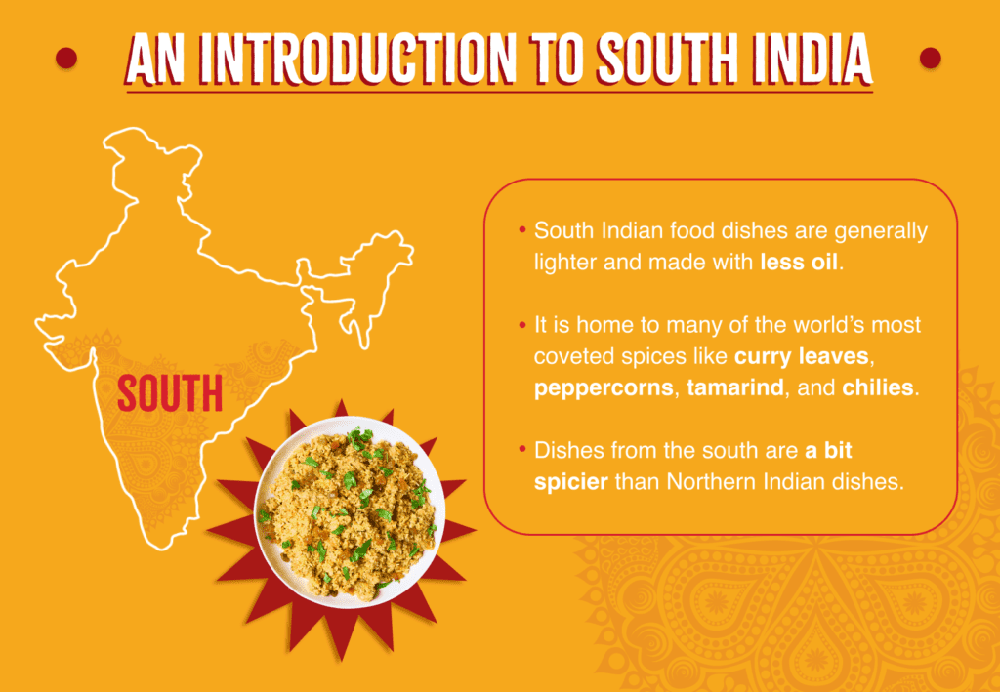

About Madras Masala
Welcome to Madras Masala, your destination for authentic South Indian cuisine. We bring the bold flavors and traditional recipes of Tamil Nadu, Kerala, Andhra Pradesh, and Karnataka right to your plate. Whether you're craving crispy dosas, fluffy idlis, spicy Chettinad biriyani, or a soothing cup of filter coffee — we’ve got it all!
Founded in 2025 with a passion for food and culture, Madras Masala is more than just a restaurant — it's a celebration of Southern hospitality and taste. Our team of expert chefs use the freshest ingredients and time-honored techniques to ensure every bite is packed with flavor and love.
Our goal is to serve traditional dishes with a modern twist in a warm and welcoming environment. Whether you're dining in, ordering online, or grabbing a quick filter coffee, we promise a flavorful experience every time.
Thank you for being a part of our journey. Come hungry, leave happy — that’s the Madras Masala way.
